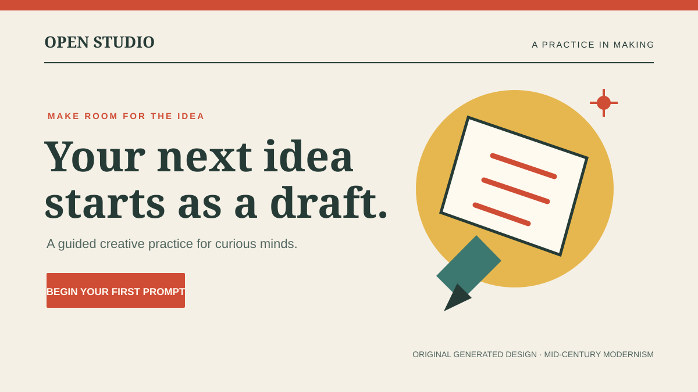
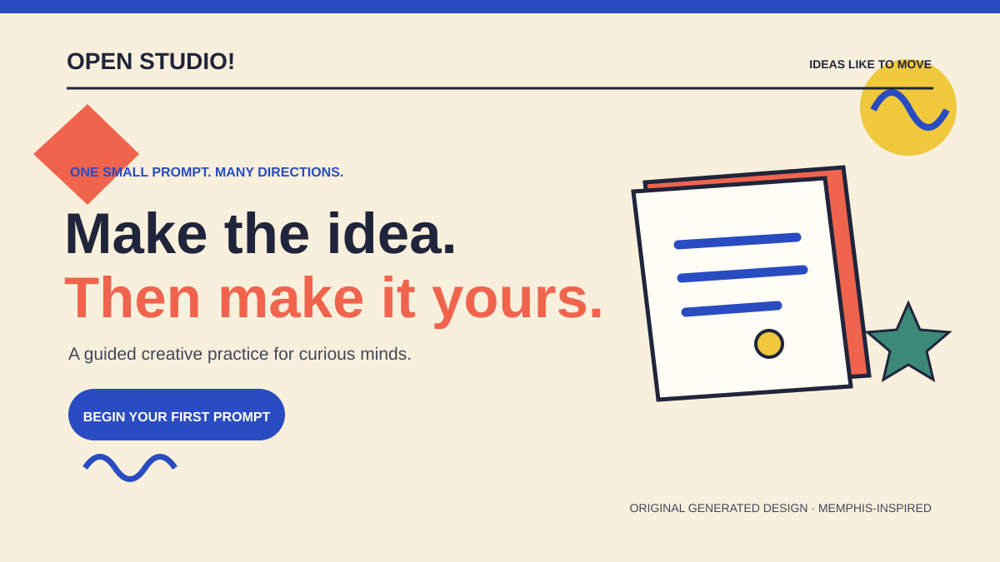
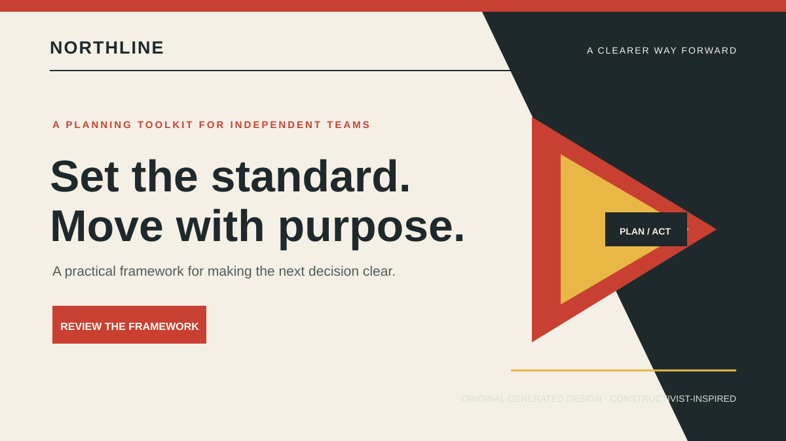
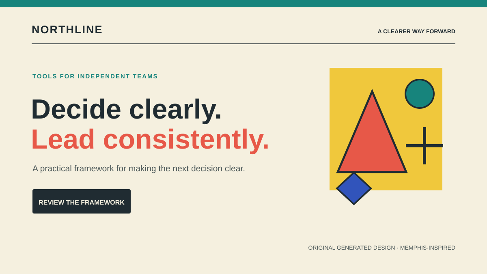
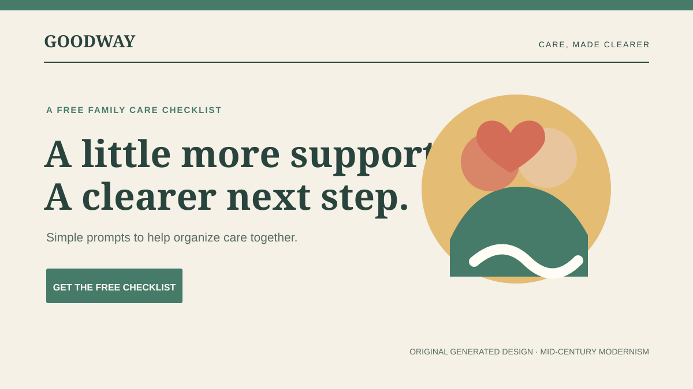
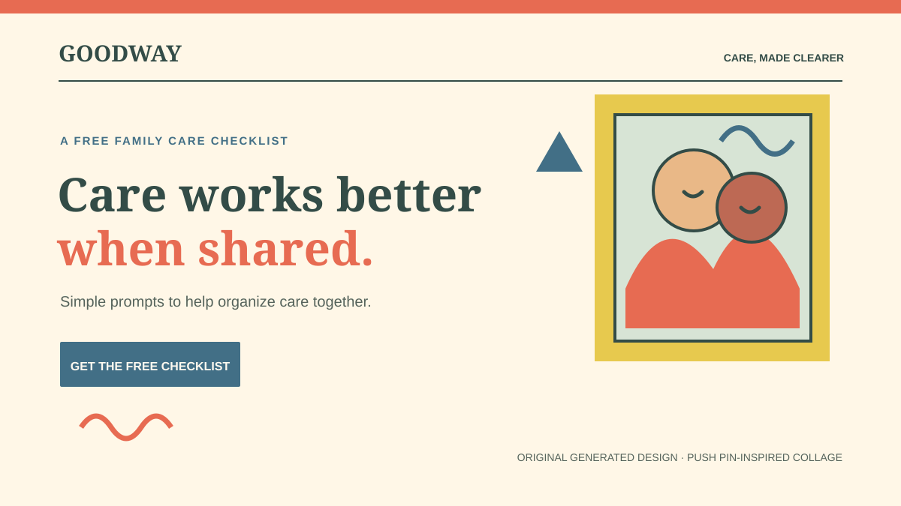

Creator
Read the archetype page



Caregiver
Read the archetype page

ORIGINAL CONCEPTS · SIX HERO COMPOSITIONS
A compact comparison gallery for Creator, Ruler, and Caregiver. Each pair keeps the brand and offer constant while changing the visual language.





